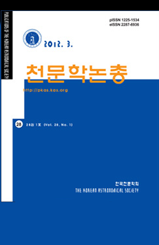
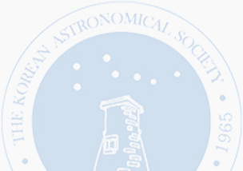

PKAS
PKAS 소개
 - Publications of the Korean
Astronomical Society - PKAS started as a second publication of the Korean Astronomical Society (KAS) in 1984, partly because the first KAS publication, the Journal of the Korean Astronomical Society (JKAS), had shifted to English-only publication. Thus, in 1986 PKAS became the sole publication which accepts astronomical and astrophysical articles either in English or Korean.
투고규정
-
범위와 윤리정책
-
General
JKAS는 천문학과 천체물리학의 모든 분야에서 국제 과학 저널이다. 모든 원고는 심판의 감시를 받는다. JKAS에 제출한 원고는 JKAS의 윤리 규정을 준수해야 한다. 매년 2월 28일, 4월 30일, 6월 30일, 8월 31일, 10월 31일, 12월 31일에 정기 간행된다. 1년간의 논제는 한 권을 구성한다.
-
원고 분류
원고는 리서치 페이퍼스, 래피드 커뮤니케이션스, 리뷰로 분류된다. 기사 제목에 대한 각주는 JKAS에 게시될 때 신속한 커뮤니케이션 및 리뷰를 나타내기 위해 사용할 수 있다. 원작을 보고하는 연구 논문은 JKAS의 주요 부분을 구성한다. 그들은 이전에 발표되지 않은 새롭고 과학적으로 중요한 결과를 포함해야 한다. 래피드커뮤니케이션(Rapid Communications)은 패스트트랙에 게재되는 간결한 연구 논문이다. 래피드 커뮤니케이션은 약 4페이지로 제한된다. 리뷰는 주요 관심 분야 중 어느 분야에서든 최근의 진보를 포괄적으로 요약한다. 검토 문서는 초대 또는 편집위원회의 승인을 거쳐 요청할 수 있다. 개별 저자는 원고를 작성하기 전에 편집장에게 승인을 구하는 의향서를 보낼 수 있다.
-
윤리정책
모든 저자는 JKAS 윤리 정책을 준수해야 한다. JKAS는 제3자 소프트웨어를 이용한 표절의 징후가 있는지 출판을 위해 제출한 모든 기사를 검토한다. 이전에 다른 저널에 제출되었던 기사를 제출한 작가들은 JKAS에 작품을 제출하는 즉시 이 사실을 선언해야 한다. 출간 후 작품에서 심각한 오류를 발견한 작가들은 JKAS 편집국에 알려 에라툼을 준비하거나 작품 철회를 최대한 빨리 요청해야 한다. 작가와 심판은 검토 중인 작품과 관련된 이해 상충을 선언해야 한다.
-
General
-
원고 준비
- 언어
원고는 영어로 명확하고 간결하게 써야 한다. 영어 작문을 잘 못하는 사람은 제출하기 전에 다른 사람의 도움을 받는 것이 좋다. 서투른 영어로 쓰인 원고는 심판이 없어도 과학 편집자들이 거절할 수 있다.
- 구조
원고에는 제목, 저자, 추상, 주요 단어, 본문, 인정 및 참고문헌이 포함되어야 한다. 주요 단어들은 국제 천문학 저널의 주요 단어 목록에서 빼내야 한다. 본문은 텍스트, 그림, 표로 구성되어 있다. 모든 수치, 표 및 참조는 본문에 인용되어야 한다.
- 수치
표준 LaTeX(기본값으로 가정)를 사용하여 논문을 컴파일할 때, 각 수치는 하나의 EPS(Incapsulated PostScript) 파일로 제공되어야 한다. 또는 PDFlaTeX를 사용하여 원본 파일에서 직접 기사 PDF를 생성할 수 있다. 이 경우 각 그림은 단일 PDF, PNG 또는 JPG 파일이어야 한다(Postscript 파일은 PDFLaTeX와 함께 작동하지 않음). 벡터그래픽(EPS, PDF)은 래스터그래픽(PNG, JPG)보다 임의로 스케일링이 가능하기 때문에 선호도가 높다. 래스터 그래픽의 경우 분해능은 약 300dpi로, 단일 열에 걸쳐 있는 그림의 경우 수평축을 따라 약 1000픽셀에 해당하고 전체 페이지에 걸쳐 있는 그림의 경우 수평축을 따라 약 2000픽셀에 해당해야 한다. 수치는 반드시 고품질이어야 한다. 모든 선, 기호 및 라벨은 그림이 간행물 크기에 맞게 크기를 조정할 때 명확히 볼 수 있어야 한다. 일반적으로 주석과 축 레이블은 최소한 그림 캡션의 텍스트와 거의 같은 크기를 가져야 한다. 우리는 저자들이 시력 장애나 색맹 독자들이 접근하기 쉬운 인물을 만들 것을 강력히 권장한다. 모든 수치는 본문에서 참조되어야 하며 적절히 배열되어야 한다. 각 그림에는 설명 범례(자막)가 제공되어야 한다.
- 표, 섹션 제목, 텍스트 참조 및 참고 문헌 목록
표는 LaTeX로 코딩해야 한다. 각 표에는 제목과 설명 표제가 제공되어야 한다. 참고 사항과 열거된 수량의 단위는 표 아래에 제시될 수 있다. 모든 (하위)섹션 타이틀은 기사, 전치사 및 접속사를 제외하고 대문자로 각 단어의 첫 글자를 써야 한다. (이전 버전의 JKAS 스타일에 비해 기사 및 섹션 타이틀은 더 이상 대문자로 작성되지 않는다. 대신, 그것들은 현재 작은 대문자로 설정된다.) 참고 문헌에는 본문에서 언급된 작품만 포함되어야 한다. 참고문헌은 논문 끝에 첫 번째 저자 이름으로 알파벳 순으로 나열해야 한다. 동일한 작성자 또는 작성자 팀에 대한 다중 참조는 연대순으로 작성되어야 한다. 같은 연도의 동일 저자에 대한 복수의 언급은 출판 연도에 a, b, c 등을 추가하여 구분해야 한다. 참고문헌에는 "et al" 뒤에 이어 처음 세 명의 저자의 이름과 이니셜이 포함되어야 한다."; 연도; 종이 제목; 저널 약어; 부피 번호; 첫 페이지.
- 언어
-
원고 제출
- 접수 전 최초 및 개정 제출
원고는 온라인 제출 시스템이나 이메일(jkas@astro.snu.ac.kr)을 통해 JKAS 사무소에 전자적으로 제출해야 한다. 편집국은 기사 ID 번호가 적힌 확인 메시지를 보낼 것이다. 일주일 이내에 이러한 메시지를 받지 못할 경우 편집국에 문의하십시오. 초기 검토에는 PDF 형식의 단일 처리 문서 파일이 필요하다. 원고를 처음 제출하는 저자는 보통 해당 저자로 간주되며, 저자가 다른 해당 저자를 명시하지 않는 한 그 이후의 모든 서신을 담당한다.
- 합격 후 최종 제출
원고가 받아들여진 후, 작가들은 원본 LaTeX 원고 파일과 그림 파일을 제출하도록 요청받는다. 표를 원고 파일에 넣어야 한다. 이 최종 버전은 승인된 버전과 정확히 동일한 내용을 포함해야 한다.
- 사전 인쇄 및 데이터베이스
우리는 작가들이 작품의 광범위한 배포를 보장하기 위해 최종 원고를 arXiv 사전 인쇄 서버에 업로드할 것을 강력히 권장한다. 모든 JKAS 논문은 발행 후 SAO/NASA 천체물리학 데이터 시스템에 추가된다.
- 접수 전 최초 및 개정 제출
-
출판, 페이지요금, 재인쇄, 증빙서류
- 출판 계약서, 페이지 요금
JKAS 편집국의 요청에 따라, 승인된 원고의 저자는 작성되고 서명한 출판 계약을 반납해야 한다. JKAS는 Creative Commons 라이선스 CC BY-SA 4.0에 따라 발행된다. 이는 다른 사람들이 JKAS에 게재된 저작물을 그들이 주목하지 않고 수정하지 않는 한 자유롭게 사용하고 공유할 수 있다는 것을 의미한다. 페이지 요금은 예고 없이 변경될 수 있다. 수수료는 흑백 1장당 7만원, 인쇄 컬러 1장당 14만원이다. 온라인 판은 컬러로 되어 있고, 컬러 프린트는 선택 사항. 페이지 이용료를 감당할 수 없는 작가들은 JKAS에 기사를 제출할 때 페이지 이용료 면제를 신청하도록 권장된다.
- 교정쇄
저자는 영수증을 받은 날로부터 2 영업일 이내에 페이지 증명서를 반납해야 한다. 원고의 과학적 내용에 영향을 미치는 수정은 편집장에게 의뢰하여 결정하게 된다. 원문 수정 비용은 작가들이 부담한다.
- 출판 계약서, 페이지 요금
윤리정책
- 모든 저자와 평론가는 학문적 청렴의 원칙에 따라야 한다. 연구 부정행위가 발견되면 JKAS에 제출된 모든 논문이 거부되고, JKAS에 게재된 모든 논문은 철회된다. 연구 부정행위에 연루된 작가들은 JKAS에서 일시적으로 또는 영구적으로 출판하는 것이 금지될 것이다. JKAS는 연구 부정행위에 연루된 작가들의 주최 단체에 항의서를 제출할 권리를 가지고 있다.
- 연구 부정행위는 아래에 정의된 바와 같이 조작, 변조, 표절, 공동저자에게 적절한 학점을 부여하지 못하거나 중복 게재된 경우를 말한다.
- "조작"이란 존재하지 않는 자료나 연구 결과를 제시하는 행위를 말한다.
- "화합"이란 연구자료·장비·공정 등을 인위적으로 조작하거나, 임의로 자료를 변경·삭제하여 연구내용이나 결과를 왜곡하는 행위를 말한다.
- "표절"이란 저자의 적절한 승인을 받지 않거나 적절한 발언이나 인용 없이 타인의 아이디어, 연구내용 또는 결과를 이용하는 행위를 말한다.
- "공저자에게 적정한 학점을 부여하지 못함"이란 연구과정이나 결과에 기여한 자를 정당한 사유 없이 공저자로 등재하지 않거나, 반대로 과학·학술적 기여가 없는 자를 공저자로 등재하는 행위를 말한다.
- "중복출판사"란 충분한 승인이나 인용 없이 이미 출판된 논문과 동일하거나 매우 유사한 논문을 게재하는 행위를 말한다.
- 위 1에서 5까지에 기술된 어떤 행위를 하도록 다른 사람에게 제안하거나 강요하거나 협박하는 행위.
- 학계나 과학 기술계 내에서 전형적으로 허용되는 범위를 크게 벗어나는 기타 모든 행위 정직한 실수, 또는 자료나 연구 결과를 해석하거나 판단하는 차이에서 발생하는 사고는 위법행위가 아니다.
- JKAS는 제3자 소프트웨어를 이용한 표절의 징후가 있는지 출판을 위해 제출된 모든 기사를 검토한다. 이전에 다른 저널에 제출되었던 기사를 제출한 작가들은 JKAS에 작품을 제출하는 즉시 이 사실을 선언해야 한다. 출간 후 작품에서 심각한 오류를 발견한 작가들은 JKAS 편집국에 알려 에라툼을 준비하거나 작품 철회를 최대한 빨리 요청해야 한다.
- 작가, 심판 및 편집자는 고려 중인 작업과 관련된 이해 상충을 선언해야 한다. 이해의 충돌은 작가나 검토자의 재정적 또는 기타 개인적 고려사항이 전문적인 판단과 객관성을 타협하거나 편향시킬 수 있는 가능성을 갖는 상황이다.
- JKAS에 제출되거나 간행된 작업에 대해 고발하거나 이와 관련된 연구 부정행위에 대한 정보를 제공하고자 하는 사람은 JKAS 편집국 또는 대한천문학회 사무소에 연락해야 한다. 본 윤리 규정의 위반 혐의와 여기에 명시되지 않은 사항은 KAS 연구윤리규정에 따라 처리한다.